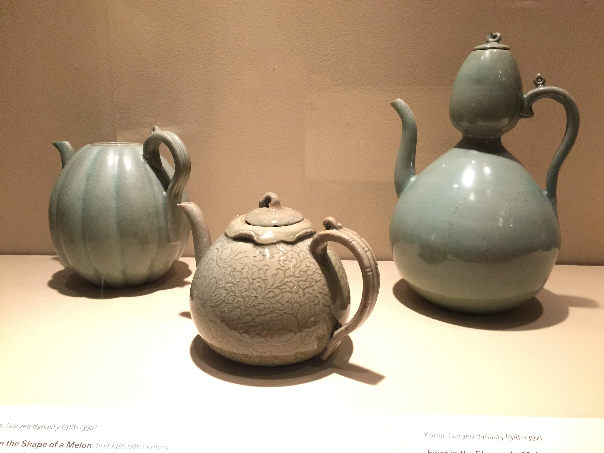
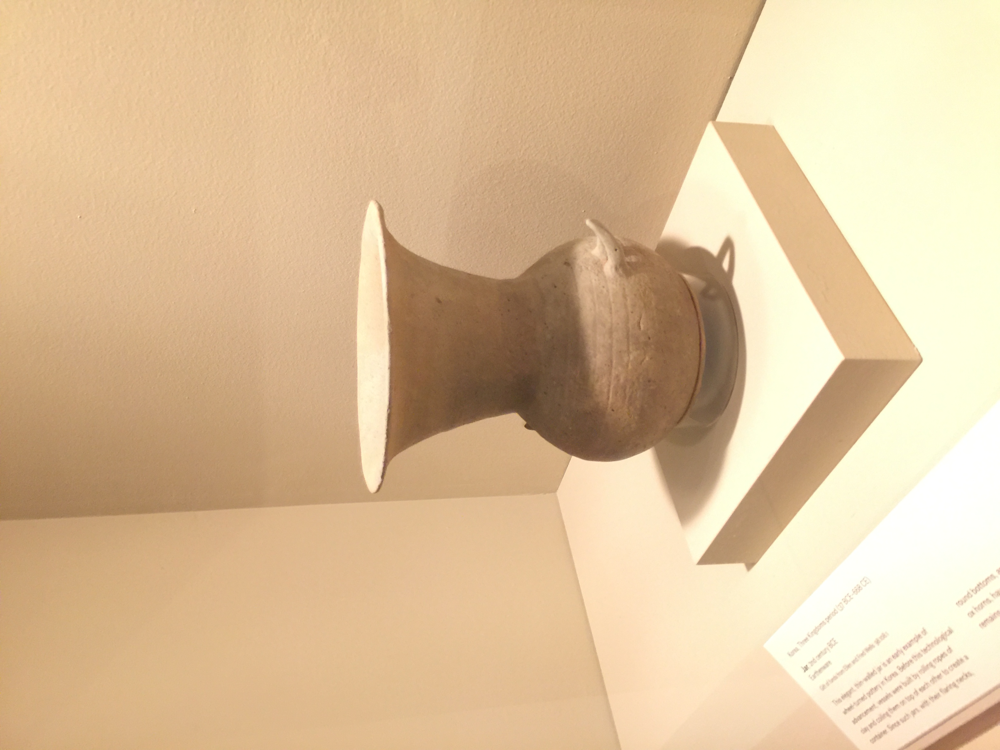
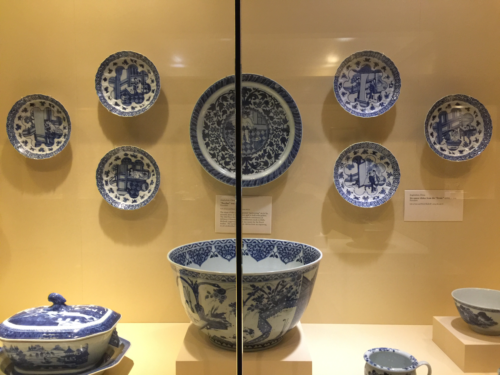
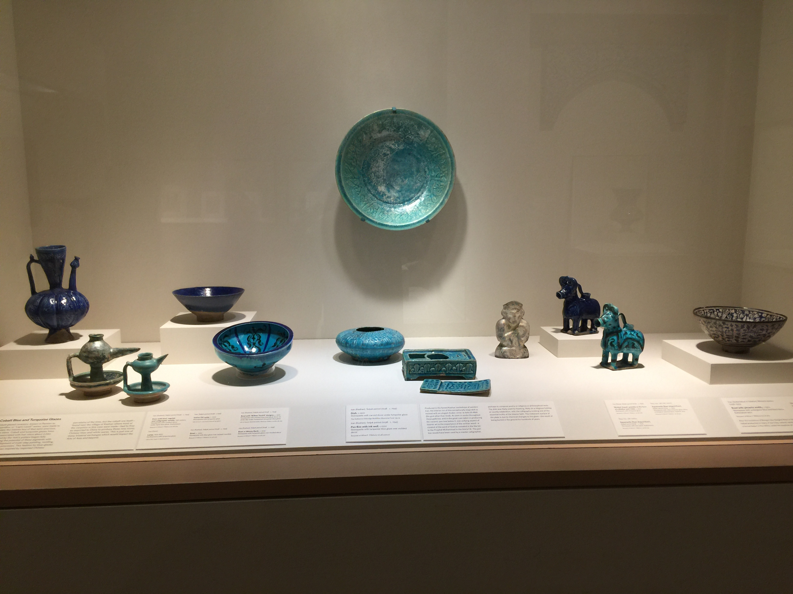

𝘔𝘦𝘢𝘣𝘺𝘦𝘰𝘯𝘨 with Flying Cranes and Clouds

12th Century, Korea
In Daoist mythology, there is a magical island off the coast of southern China. The island is supposedly inhabited by immortal beings, and by cranes nested in its pine trees. Thus, the crane became a symbol of immortality.
Ewers in the shape of Melons and Gourds
12th Century, Korea
These Ewers(water containers with wide mouths) are in the shape of melons and gourds. Gourds in ancient china had many uses. They are great for storage, and drinking liquid from one is belived to elongate one's lifespan.
Clay Jar
2nd Century BCE, Korea
This simple, thin-walled jar may not look very important, but looks can be decieving. This jar was among the first of Korean wheel-turned pottery. Since such jars have only been found with funary remains, it is belived that this jar was used to hold ceremonial offerings
Chinese Dishes and Trays
1700s, China
These blue-and-white dishes were most likely made for the Dutch market, since the designs are similar to Delftware(chinese-inspired dishware made in Delft, Holland).
Cobalt Blue Glazed Ceramics
12th Century, Iran
The cobalt glaze on these ceramics have been associated with Iran since 2000 BCE. The art was inspired by imported chinese porcelains, but the ore used to make the pots came from Iran, and was exported to china to make the iconic blue-white china dishware.